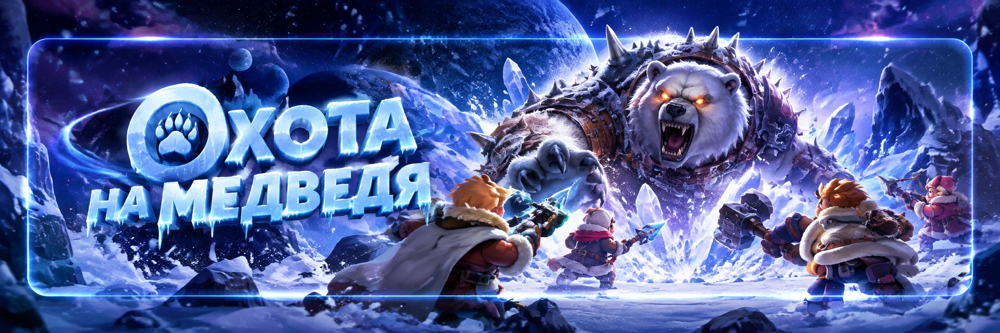
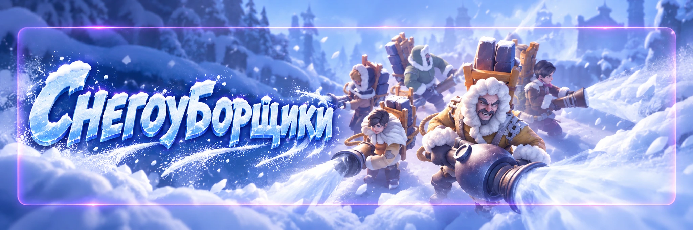

Большое обновление
19 октября 2026
Новые функции, события, эксперты и важные изменения обновления Whiteout Survival.
Быстрый просмотр обновления
Сначала главное. Откройте только нужный раздел или разверните всю страницу одним нажатием.
Когда выйдет обновление
Основное обновление и календарь запуска новых функций
Техработы 19 октября, 05:00–07:30 МСК. Юстус появится 26 октября, Арена экспедиции стартует 2 ноября, «Авантюрное слияние» — 6 ноября.
Большое обновление «Белая мгла: выживание» запланировано на 19 октября 2026 года. Технические работы пройдут с 05:00 до 07:30 по московскому времени. В это время вход в игру может быть временно недоступен.
Часть нового контента появится после завершения обновления, а некоторые функции будут запускаться позже и только в государствах, достигших необходимых условий прогресса.
Новый эксперт Юстус
Эксперт развития, который усиливает ежедневные активности и приток материалов
Новый эксперт развития Юстус: дополнительные награды за исследования, Лабиринт, приключения питомцев, сборы против зверей и «Поход по тундре».
В октябрьском обновлении появится новый эксперт развития Юстус. Согласно внутриигровому объявлению, он станет доступен в подходящих государствах с 26 октября 2026 года, 00:00 МСК.
Юстус станет 11-м экспертом и ориентирован не на прямое усиление армии, а на постоянное получение дополнительных ресурсов и материалов для развития аккаунта. В актуальных базах его относят к экспертам роста, а доступность связывают с государствами, где уже достигнут соответствующий этап развития.
📚 Предварительные навыки Юстуса
🏛 Former Glory (рабочий перевод: «Былая слава»)
Позволяет получать Dynasty Honor Chest (рабочий перевод: «Сундук чести династии») в наградах Освоения через определённые интервалы времени. Количество наград ограничено суточным лимитом.
💎 Glorious Gains (рабочий перевод: «Славная добыча»)
Увеличивает количество светящихся камней, получаемых во время рейдов в Лабиринте.
🐾 Treasure Seeker (рабочий перевод: «Искатель сокровищ»)
Добавляет дополнительные ежедневные приключения питомцев и даёт шанс получить двойную награду.
🤝 Master Diplomat (рабочий перевод: «Главный дипломат»)
Позволяет получать Dynasty Honor Chest (рабочий перевод: «Сундук чести династии») за участие в сборах на зверей. Количество сундуков в сутки ограничено.
🧭 Fortune Wayfarer (рабочий перевод: «Странник удачи»)
Даёт дополнительные Dynasty Honor Chest (рабочий перевод: «Сундук чести династии») за прохождение определённого количества встреч в «Походе по тундре».
⭐ Чем интересен Юстус
Главная ценность Юстуса в том, что он превращает обычные ежедневные активности в дополнительные награды. Освоение, сборы на зверей, Лабиринт, питомцы и «Поход по тундре» начинают приносить больше ресурсов без необходимости участвовать в отдельном боевом событии.
Особенно интересны Dynasty Honor Chest (рабочий перевод: «Сундук чести династии»), поскольку они содержат материалы, связанные с развитием экспертов. Поэтому Юстус потенциально может ускорять прокачку всей системы экспертов, а не только собственного персонажа.
🎥 Видео про Юстуса
Арена экспедиции
Новый PvP-режим с показателями экспедиции
Новый PvP-режим использует показатели экспедиции и не приводит к реальным потерям войск. Первый сезон — 2 ноября.
В игре появится новый PvP-режим «Арена экспедиции». По внутриигровому объявлению он будет открываться в государствах, которые приблизились к этапу топки с кристаллом огня ур. 3.
Первый сезон новой Арены запланирован на 2 ноября 2026 года.
🔄 Как работает режим
Игрок сможет заранее настроить защитную формацию, затем бросать вызов другим губернаторам, получать очки Арены и подниматься в ежедневном и сезонном рейтингах.
В новом режиме используются показатели экспедиции. Поэтому состав, который отлично показывает себя в обычной Арене, не обязательно будет таким же сильным в новом режиме.
🏆 Рейтинг и награды
Победы дают очки Арены. Предусмотрены ежедневные и сезонные рейтинги с наградами.
🛡️ Защитный состав
Для Арены можно заранее сохранить отдельную защитную формацию.
🐾 Навыки питомцев
Навыки питомцев будут автоматически действовать в отрядах Арены экспедиции.
✅ Задания Арены
И Арена экспедиции, и Арена исследователей будут учитываться в прогрессе миссий арены.
🧠 Хольгер станет полезнее

После обновления навыки Хольгера «Элитный боец арены» и «Наследие» будут работать и в новой Арене экспедиции. В актуальной базе Хольгера на максимальном уровне близости указаны экспедиционные бонусы до +15% к атаке и +15% к защите войск, поэтому его ценность для нового режима возрастает.
Охота на медведя: новые награды
Расширение верхних порогов урона и новые достижения
Расширяются верхние диапазоны наград за личный урон и достижения. За часть боёв до техработ могут прийти дополнительные награды.
В обновлении 19 октября 2026 года разработчики расширяют систему наград за Охоту на медведя. Изменения в первую очередь затронут игроков, которые уже давно достигают очень высоких показателей урона.
В разделе «Личные награды за урон охотничьей ловушки» появятся новые уровни наград, а система охотничьих достижений получит дополнительные цели выше прежнего максимального порога.
🐻 Охота на медведя

🎯 Личный урон
На высоких уровнях урона скорректируют диапазоны очков личных наград и добавят новые ступени выше прежнего максимума.
🏆 Новые достижения
В разделе «Награды за достижения охоты» добавят новые цели по урону и награды выше прежнего максимума.
💎 Больше пользы от роста
Сильные игроки снова получат новые цели вместо ситуации, когда дальнейший рост урона уже не открывал дополнительные награды.
📬 Компенсация
Тем, кто участвовал в Охоте на медведя в день обновления до начала технических работ, могут дослать положенные награды за новые уровни.
📬 Важный момент в день обновления
🖼️ Как выглядит раздел личных наград

Изменения экспертов
Удобная разведка Агнес и расширение пользы Хольгера
Агнес получает функцию «Выполнить все» для разведки, а аренные навыки Хольгера начинают работать и в Арене экспедиции.
🔎 Агнес: «Выполнить все» для разведки

После обновления навык Агнес «Эффективная разведка» получит дополнительное удобство. Если навык уже открыт, станет доступна функция «Выполнить все», которая позволит одним нажатием завершать доступные задания разведки.
Сам навык по-прежнему даёт до +8 дополнительных заданий разведки в день. Новая кнопка не увеличивает количество заданий и не добавляет новые награды, а просто заметно сокращает ежедневную рутину.
🛡️ Хольгер: бонусы переходят в Арену экспедиции

После обновления навыки Хольгера «Элитный боец арены» и «Наследие» будут давать свои боевые бонусы не только в обычной Арене, но и в новой Арене экспедиции.
Это делает Хольгера заметно универсальнее. Раньше часть его навыков была жёстко привязана к классической Арене, а теперь вложения в них будут полезны сразу в двух PvP-режимах.
Изменения для альянса
Почта альянса, гарнизоны, Мобилизация и походные припасы
Почта альянса, улучшенное управление гарнизонами, новые миссии Мобилизации альянса и бесплатные походные припасы дважды в день.
📬 Почта альянса
В меню управления альянсом появится функция «Почта альянса». Офицеры R5 и R4 смогут отправлять сообщения сразу участникам выбранных рангов.
В каждом таком письме будет отображаться жетон ранга отправителя.
🛡️ Управление и информация о гарнизонах
R4 смогут отсылать отряды из гарнизона лидера альянса. На экране гарнизона здания появится кнопка «Отослать всех». Ею смогут пользоваться лидер альянса, R4 и капитаны, которым разрешено отправлять отряды домой.
Кроме того, в вашем городе и городах союзников будет отображаться число находящихся там губернаторов. Нажатие на город откроет подробную информацию о союзном гарнизоне.
🔥 Новые миссии Мобилизации альянса
По мере развития государства в Мобилизации альянса будут появляться новые миссии, связанные с питомцами, экспертами и очками кристаллов огня.
Очки кристаллов огня можно будет получать при расходовании кристаллов огня, фрагментов кристаллов огня и усовершенствованных кристаллов огня на улучшение зданий и исследования технологий. Количество очков зависит от типа и количества потраченных материалов.
🎒 Бесплатные походные припасы
Подарки и Популярность
Новая постоянная социальная система, витрина профиля и компенсации
Появятся постоянные Подарки, уровень подарков и Популярность. Для части уже полученных наград предусмотрены компенсации.
🎀 Как работают подарки
Подарки можно получать за ежедневную активность, выполнение миссий, участие в событиях и выполнение определённых условий. После выполнения требований некоторые редкие подарки можно будет приобретать.
Подарки не дают боевых показателей или бонусов и не усиливают армию. Уже отправленный подарок нельзя передарить другому игроку.
⭐ Уровень подарков
За отправку подарков начисляются очки дарения. Их накопление повышает уровень подарков и позволяет получать соответствующие награды.
💖 Популярность
Лайки другим губернаторам можно будет ставить в их профилях, некоторых событиях и таблицах лидеров. Полученные лайки увеличивают Популярность.
Формат профиля губернатора также изменится, чтобы удобнее показывать активность и достижения.
🎁 Компенсация после обновления
В течение 48 часов после завершения обновления подходящим игрокам могут прийти дополнительные подарки и награды.
📦 Разница в наградах
Если в день обновления после 00:00 МСК, но до начала технических работ, уже были получены этапные награды в событиях «Король Ледяного поля», «Зал губернаторов», «Мобилизация альянса», «Сражение альянсов» или «Ежедневные миссии», разработчики могут дослать разницу.
🌟 «Арена звезд»
Подарок предусмотрен для губернаторов, которые между 00:00 МСК в день обновления и началом обновления вошли в игру и получили письмо с наградами за топ-3 предыдущего сезона «Арены славы».
⚔️ Арена
Губернаторам, которые завершили не менее 5 испытаний Арены за день до обновления и вошли в игру между 00:00 МСК в день обновления и началом обновления, предусмотрены 1 «Захватывающее сражение» и 100 жетонов арены.
🏅 «Высокие почести»
Эксклюзивные подарки предусмотрены для губернаторов, ранее получавших награды «Высоких почестей»; их состав зависит от уровня сферы льда.
🖼️ Как выглядела похожая механика раньше

Престижная внешность губернатора
Новая «Престижная внешность», оформление профиля и анимированные эмоции
Для VIP 12 появится «Престижная внешность»: темы, постоянные бонусы, фон профиля, анимации появления и 8 анимированных эмоций.
У губернаторов, которым доступны «Преимущества престижа», появится вкладка «Престижная внешность».
В наборах «Эмблема изысканности» можно будет получать эмблемы изысканности, а затем обменивать необходимое количество эмблем на престижную внешность выбранной темы.
👩❄️👨❄️ Мужская и женская версии
Каждая тема включает обе версии. После открытия темы между ними можно свободно переключаться.
🎬 Анимации появления
Мужская и женская версии внешности получают уникальные анимации появления.
🖼️ Фон профиля
Открытая тема даёт бессрочный фон профиля.
😀 8 эмоций
Каждая открытая тема даёт 8 эксклюзивных анимированных эмоций.
🖼️ Раннее превью с Reddit
До официального октябрьского объявления сообщество публиковало раннее превью системы Chief Appearance. Оно показывает идею оформления, но финальный интерфейс может отличаться.
Авантюрное слияние
Новое событие с генераторами, объединением фигур, туманом и Караваном
Новая мини-игра с генераторами и объединением фигур: расчищаем туман, заполняем атлас и тратим монеты слияния в Караване. Старт — 6 ноября.
6 ноября 2026 года в государствах, соответствующих необходимым условиям, станет доступно новое событие «Авантюрное слияние». Это отдельная мини-игра с механикой объединения фигур, а не объединение государств.
⚡ Энергия и генераторы
Специальная энергия слияния используется для активации генераторов. Они создают фигуры, которые появляются на игровом поле.
🧩 Объединение фигур
Две одинаковые фигуры можно объединить и получить фигуру более высокого уровня. Так постепенно открываются следующие звенья цепочки.
🌫️ Расчистка тумана
Часть поля скрыта туманом. Для открытия новых областей потребуется собирать определённые фигуры, после чего станут доступны новые зоны и награды.
📖 Атлас
Во время события можно будет заполнять атлас «Авантюрного слияния», открывая новые фигуры по мере продвижения.
🪙 Монеты слияния и Караван
Некоторые фигуры максимального уровня можно будет использовать для получения монет слияния и других предметов события. Монеты расходуются в караване «Авантюрного слияния», где их можно обменивать на награды.
Полный ассортимент Каравана и точные цены до запуска события пока не раскрыты.
✅ Ежедневные миссии
В событии будут собственные ежедневные миссии. Они дадут дополнительные предметы и ресурсы для продвижения, поэтому даже без активных трат событие имеет смысл проверять каждый день.
Не тратьте всю энергию слияния сразу и не используйте фигуры максимального уровня для получения монет без необходимости. Сначала стоит посмотреть, какие фигуры нужны для снятия тумана, продолжения цепочек и открытия следующих областей.
Снегоуборщики: дополнительная модифицированная ракета
Изменение «Набора снежного воителя 2» и компенсация после обновления
В «Набор снежного воителя 2» добавят одну модифицированную ракету. Тем, кто купил набор до обновления, обещана компенсация.
После обновления изменится содержимое «Набора снежного воителя 2» события «Снегоуборщики»: в него добавят +1 модифицированную ракету.
Это небольшая правка, но на поздних этапах события дополнительная ракета может заметно сэкономить топливо и ускорить расчистку сложных участков.
📩 Компенсация
Если в день обновления событие уже доступно игроку и «Набор снежного воителя 2» был куплен до обновления, дополнительную модифицированную ракету обещают отправить в течение 48 часов после завершения обновления.
🖼️ Снегоуборщики

Чат, разведка и удобство интерфейса
Межгосударственные группы, письма разведки, Лабиринт и компенсация потерь
Межгосударственные групповые чаты, улучшенные письма разведки, дополнительные слоты аватаров, сохранение формаций Лабиринта и другие QoL-правки.
🌍 Межгосударственные групповые чаты
Губернаторы с топкой ур. 30 и выше из государств, где открыт 5-й ур. кристалла огня, смогут приглашать подходящих друзей из других государств в групповые чаты.
🔎 Письма разведки
Уведомления об успешных и заблокированных попытках разведать вас будут содержать больше сведений и координаты разведанного объекта.
🖼️ Пользовательские аватары
Можно будет загружать и сохранять несколько пользовательских аватаров. Дополнительные слоты открываются по мере повышения уровня топки. Для использования функции потребуется последняя версия игры.
🤝 Список друзей
После просмотра информации о друге возврат на экран друзей будет сохранять прежнюю позицию в списке.
🌍 Межгосударственные чаты и канал R4/R5
После открытия функции можно будет создать до 10 групповых чатов и состоять максимум в 100 группах. Чтобы группа принимала межгосударственные приглашения, её администратор также должен соответствовать требованиям функции.
На главном экране чата появится значок канала «R4/R5». Офицеры R5 и R4 смогут отдельно просматривать управленческий чат.
🔎 Улучшенные письма разведки
Письма об успешных и заблокированных попытках разведать вас будут показывать более подробную информацию и координаты объекта. Из письма можно будет перейти прямо к цели, а если проводивший разведку губернатор нарушил правила игры, на него можно будет пожаловаться прямо из письма.
🏆 Освоение и Лабиринт
🏆 «Мой рейтинг» и топ-3
На главном экране Освоения кнопка таблицы лидеров будет показывать «Мой рейтинг» и трёх лучших губернаторов.
🧩 Сохранённые формации
Сохранённые формации для каждой области освоения в Лабиринте будут сохраняться между неделями.
⚡ «Быстрая отправка»
Сначала будет учитываться соотношение войск, сохранённое на экране отправления в глушь, затем состав подберётся с учётом доступных войск и текущей вместимости войск.
🆘 «Обратно наверх!»
В системе компенсации потерь появится раздел «Обратно наверх!». В нём будут отображаться недавние потери подразделений и ресурсов, а также информация о противниках.
В чате альянса появится запрос о помощи. Союзники смогут поддержать игрока, чтобы он получил дополнительные припасы и быстрее восстановился.
Магазины, Остров Рассвета и другие оптимизации
Еженедельные сундуки, точные изменения событий, приказов и интерфейсов
Еженедельные сундуки, изменения Острова Рассвета, новые таймеры приказов и Банка, Драконий тиран и другие ежедневные оптимизации.
📦 Станция тундровых припасов
В Станции тундровых припасов появятся еженедельные сундуки с наградами.
🌸 Остров Рассвета
На острове Рассвета появится новое украшение «Путь цветка».
📘 Чертеж гавани Надежды
Когда государство достигнет необходимого возраста или уровня прогресса, губернаторы, у которых ещё не открыта «Гавань Надежды», смогут купить «Чертеж гавани Надежды» в магазине знаков возрождения.
🎨 Коллекционная галерея
Обычные бессрочные облики профиля губернатора будут давать больше очков коллекции, а украшение «Тиран поля битвы» будет относиться к особым обликам и давать больше очков.
🛒 Магазины и награды
❄️ Лавка разноцветного льда
На экране будет видно, сколько осталось предмета «Цветное варенье». Варенье, потраченное в текущем раунде, будет списываться сразу, даже если раунд ещё не завершён.
🧊 Полярный ужас
Специальные награды инициатора рейда на экране подробностей расположат удобнее, чтобы было проще увидеть, сколько раз их ещё можно получить.
⏱️ Приказы губернатора и Банк
⚡ «Поспешная работа»
Перезарядка станет 23 часа.
🎓 «Продвинутые тренировки»
Перезарядка станет 1 день 23 часа.
🌅 «Благодарность Рассветного Альянса»
Перезарядка станет 1 день 23 часа.
🏦 Вклад с объёмом наград 5%
Для новых вкладов срок станет 23 часа. Вклады, открытые до обновления, сохранят прежние 24 часа.
🐉 События и координация
🐉 Драконий тиран
Максимальный уровень чести рассвета повысят до ур. 5 и добавят уровни 4 и 5. Список участников можно будет сортировать по возрастанию выбранного показателя: «Сила войска» или «Сила».
🏭 Битва за литейную и Лига бойцов тундры
Если во время регистрации роль изменится между участником битвы и запасным, при следующем открытии экрана события появится уведомление с назначенным легионом и текущей ролью: участник битвы или запасной.
⚔️ Мощь государств
Под показателями «Очков сегодня» и «Всего очков» будет показана доля каждого государства в общих очках. Во время фазы оживления можно будет посмотреть, какие союзники помогали и сколько раз.
🎨 Визуальные улучшения
Улучшат внешний вид рамки аватара «Лунное цветение», отображение наград личного и альянсового рейтингов в «Безумной Джо», а также оформление некоторых миссий обелиска.
📅 Напоминания о событиях
Игровые события можно будет добавлять прямо в календарь устройства
Начало и окончание ключевых событий можно будет добавлять в календарь устройства и получать напоминания.
У подходящих губернаторов появится кнопка «Добавить напоминание в календарь». Она добавляет в календарь устройства название события, а также время его начала и окончания. Срабатывание уведомлений зависит от настроек календаря на устройстве.
🏭 Битва за литейную
Начало и окончание события можно сохранить в календарь.
⚔️ Лига бойцов тундры
Поддерживается добавление времени события в календарь устройства.
🏔️ Битва в каньоне
Событие входит в список поддерживаемых календарных напоминаний.
🐻 Охота на медведя
Можно сохранить время начала и окончания Охоты на медведя.
🤪 Безумная Джо
Начало и окончание события также можно добавить в календарь.
✅ Что проверить сразу после обновления 19 октября
Короткая памятка, чтобы не пропустить компенсации и новые функции
Короткий чек-лист: что проверить сразу после технических работ и какие компенсации не пропустить в первые 48 часов.
🎁 1. Игровая почта
В течение 48 часов могут прийти дополнительные награды за новые ступени Охоты на медведя, модифицированная ракета за ранее купленный «Набор снежного воителя 2» и компенсации по системе Подарков.
🐻 2. Охота на медведя
Проверьте новые ступени в «Личных наградах за урон охотничьей ловушки» и новые цели в «Наградах за достижения охоты».
🔎 3. Агнес
Если открыт навык «Эффективная разведка», проверьте функцию «Выполнить все». Она не охватывает награды разведки, связанные со зверями.
📬 4. Инструменты альянса
R4 и R5 стоит проверить Почту альянса, канал R4/R5, информацию о гарнизонах и кнопку «Отослать всех».
🎁 5. Подарки и Популярность
Проверьте уровень подарков, витрину подарков и учёт прежних лайков с острова Рассвета.
👗 6. «Престижная внешность»
Если у вас открыты «Преимущества престижа», проверьте новые темы, эмблемы изысканности, бонусы облика, мужскую и женскую версии и 8 анимированных эмоций.
📦 7. Станция тундровых припасов
Посмотрите новые еженедельные сундуки.
🌅 8. Остров Рассвета
Проверьте «Путь цветка» и возможность купить «Чертеж гавани Надежды» в магазине знаков возрождения.
⏱️ 9. Новые таймеры
Проверьте «Поспешную работу» — 23 часа, «Продвинутые тренировки» и «Благодарность Рассветного Альянса» — по 1 дню 23 часа, а также новый 23-часовой срок вклада с объёмом наград 5%.
🌍 10. Чаты
Если у вас топка ур. 30+ и в государстве открыт 5-й ур. кристалла огня, проверьте межгосударственные групповые чаты. Офицерам R4/R5 стоит также открыть отдельный канал управления.